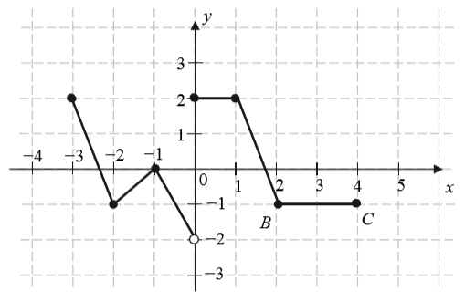
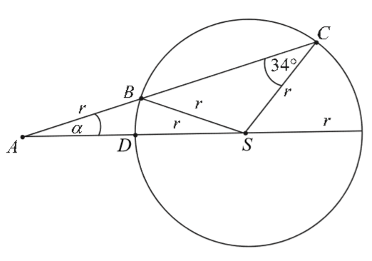
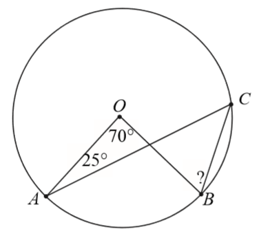
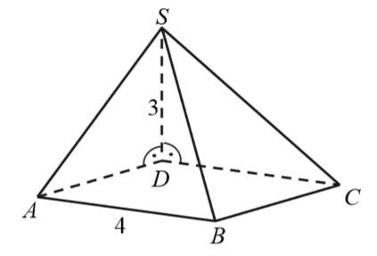
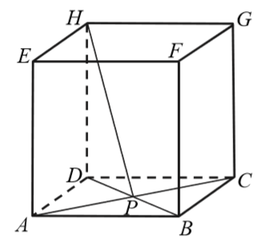
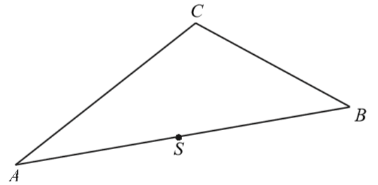
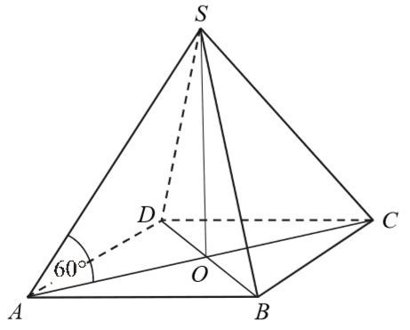
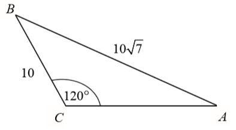

Matura 2019 czerwiec
Rozwiązaniem równania \(\frac{(x^2-2x-3)\cdot (x^2-9)}{x-1}=0\)
nie jest
liczba
A.\( -3 \)
B.\( -1 \)
C.\( 1 \)
D.\( 3 \)
Liczba \(\frac{\log_327}{\log_3\sqrt{27}}\) jest równa
A.\( -\frac{1}{2} \)
B.\( 2 \)
C.\( -2 \)
D.\( \frac{1}{2} \)
Jedną z liczb spełniających nierówność \((x-6)\cdot (x-2)^2\cdot (x+4)\cdot
(x+10)\gt0\) jest
A.\( -5 \)
B.\( 0 \)
C.\( 3 \)
D.\( 5 \)
Liczba dodatnia \(a\) jest zapisana w postaci ułamka zwykłego. Jeżeli licznik tego
ułamka zmniejszymy o \(50\%\), a jego mianownik zwiększymy o \(50\%\), to otrzymamy liczbę \(b\)
taką, że
A.\( b=\frac{1}{4}a \)
B.\( b=\frac{1}{3}a \)
C.\( b=\frac{1}{2}a \)
D.\( b=\frac{2}{3}a \)
Funkcja liniowa \(f\) jest określona wzorem \(f(x)=(a+1)x+11\), gdzie \(a\) to
pewna liczba rzeczywista, ma miejsce zerowe równe \(x=\frac{3}{4}\). Stąd wynika, że
A.\( a=-\frac{41}{3} \)
B.\( a=\frac{41}{3} \)
C.\( a=-\frac{47}{3} \)
D.\( a=\frac{47}{3} \)
Funkcja \(f\) jest określona dla każdej liczby rzeczywistej \(x\) wzorem
\(f(x)=(m\sqrt{5}-1)x+3\). Ta funkcja jest rosnąca dla każdej liczby \(m\) spełniającej warunek
A.\( m\gt\frac{1}{\sqrt{5}} \)
B.\( m\gt1-\sqrt{5} \)
C.\( m\lt\sqrt{5}-1 \)
D.\( m\lt\frac{1}{\sqrt{5}} \)
Układ równań \(\begin{cases} 2x-y=2 \\ x+my=1 \end{cases} \) ma nieskończenie wiele
rozwiązań dla
A.\( m=-1 \)
B.\( m=1 \)
C.\( m=\frac{1}{2} \)
D.\( m=-\frac{1}{2} \)
Rysunek przedstawia wykres funkcji \(f\) zbudowany z \(6\) odcinków, przy czym
punkty \(B=(2,-1)\) i \(C=(4,-1)\) należą do wykresu funkcji.  Równanie \(f(x)=-1\) ma
A.dokładnie jedno rozwiązanie.
B.dokładnie dwa rozwiązania.
C.dokładnie trzy rozwiązania.
D.nieskończenie wiele rozwiązań.
Dany jest rosnący ciąg arytmetyczny \((a_n)\), określony dla liczb naturalnych
\(n\ge1\), o wyrazach dodatnich. Jeśli \(a_2+a_9=a_4+a_k\), to \(k\) jest równe
A.\( 8 \)
B.\( 7 \)
C.\( 6 \)
D.\( 5 \)
W ciągu \((a_n)\) na określonym dla każdej liczby \(n\ge1\) jest spełniony warunek
\(a_{n+3}=-2\cdot 3^{n+1}\). Wtedy
A.\( a_5=-54 \)
B.\( a_5=-27 \)
C.\( a_5=27 \)
D.\( a_5=54 \)
Dla każdej liczby rzeczywistej \(x\) wyrażenie \((3x-2)^2-(2x-3)(2x+3)\) jest po
uproszczeniu równe
A.\( 5x^2-12x-5 \)
B.\( 5x^2-13 \)
C.\( 5x^2-12x+13 \)
D.\( 5x^2+5 \)
Kąt \(\alpha \in (0^\circ , 180^\circ )\) oraz wiadomo, że \(\sin \alpha \cdot \cos
\alpha =-\frac{3}{8}\). Wartość wyrażenia \((\cos \alpha -\sin \alpha )^2+2\) jest równa
A.\( \frac{15}{4} \)
B.\( \frac{9}{4} \)
C.\( \frac{27}{8} \)
D.\( \frac{21}{8} \)
Wartość wyrażenia \(2\sin^{2} 18^\circ +\sin^{2} 72^\circ +\cos^{2} 18^\circ \)
jest równa
A.\( 0 \)
B.\( 1 \)
C.\( 2 \)
D.\( 4 \)
Punkty \(B\), \(C\) i \(D\) leżą na okręgu o środku \(S\) i promieniu \(r\). Punkt
\(A\) jest punktem wspólnym prostych \(BC\) i \(SD\), a odcinki i są równej długości. Miara kąta
\(BCS\) jest równa \(34^\circ \)(zobacz rysunek).  Wtedy
A.\( \alpha =12^\circ \)
B.\( \alpha =17^\circ \)
C.\( \alpha =22^\circ \)
D.\( \alpha =34^\circ \)
Pole trójkąta \(ABC\) o wierzchołkach \(A=(0,0)\), \(B=(4,2)\), \(C=(2,6)\) jest
równe
A.\( 5 \)
B.\( 10 \)
C.\( 15 \)
D.\( 20 \)
Na okręgu o środku w punkcie \(O\) wybrano trzy punkty \(A\), \(B\), \(C\) tak, że,
\(|\sphericalangle AOB|=70^\circ \), \(|\sphericalangle OAC|=25^\circ \). Cięciwa \(AC\) przecina
promień \(OB\) (zobacz rysunek). Wtedy miara \(\sphericalangle OBC\) jest równa 
A.\( \alpha =25^\circ \)
B.\( \alpha =60^\circ \)
C.\( \alpha =70^\circ \)
D.\( \alpha =85^\circ \)
W układzie współrzędnych na płaszczyźnie dany jest odcinek \(AB\) o końcach w
punktach \(A=(7,4)\), \(B=(11,12)\). Punkt \(S\) leży wewnątrz odcinka \(AB\) oraz \(|AS|=3\cdot
|BS|\). Wówczas
A.\( S=(8,6) \)
B.\( S=(9,8) \)
C.\( S=(10,10) \)
D.\( S=(13,16) \)
Suma odległości punktu \(A=(-4,2)\) od prostych o równaniach \(x=4\) i \(y=-4\)
jest równa
A.\( 14 \)
B.\( 12 \)
C.\( 10 \)
D.\( 8 \)
Suma długości wszystkich krawędzi sześcianu jest równa \(96\) cm. Pole powierzchni
całkowitej tego sześcianu jest równe
A.\( 48\ \text{cm}^2\)
B.\( 64\ \text{cm}^2 \)
C.\( 384\ \text{cm}^2 \)
D.\( 512\ \text{cm}^2 \)
Dany jest trójkąt równoramienny \(ABC\), w którym \(|AC|=|BC|\). Kąt między
ramionami tego trójkąta ma miarę \(44^\circ \). Dwusieczna kąta poprowadzona z wierzchołka \(A\)
przecina bok \(BC\) tego trójkąta w punkcie \(D\). Kąt \(ADC\) ma miarę
A.\( 78^\circ \)
B.\( 34^\circ \)
C.\( 68^\circ \)
D.\( 102^\circ \)
Liczb naturalnych dwucyfrowych podzielnych przez \(6\) jest
A.\( 60 \)
B.\( 45 \)
C.\( 30 \)
D.\( 15 \)
Podstawą ostrosłupa jest kwadrat \(ABCD\) o boku długości \(4\). Krawędź boczna
\(DS\) jest prostopadła do podstawy i ma długość \(3\) (zobacz rysunek).  Pole ściany \(BCS\) tego
ostrosłupa jest równe
A.\( 20 \)
B.\( 10 \)
C.\( 16 \)
D.\( 12 \)
Dany jest sześcian \(ABCDEFGH\). Przekątne \(AC\) i \(BD\) ściany \(ABCD\)
sześcianu przecinają się w punkcie \(P\) (zobacz rysunek).  Tangens kąta, jaki odcinek \(PH\) tworzy z płaszczyzną
\(ABCD\), jest równy
A.\( \frac{\sqrt{2}}{2} \)
B.\( \frac{1}{2} \)
C.\( 1 \)
D.\( \sqrt{2} \)
Przekrojem osiowym walca jest kwadrat o przekątnej długości \(12\). Objętość tego
walca jest zatem równa
A.\( 36\pi\sqrt{2} \)
B.\( 108\pi\sqrt{2} \)
C.\( 54\pi \)
D.\( 108\pi \)
Ze zbioru kolejnych liczb naturalnych \(\{20,21,22,...,39,40\}\) losujemy jedną
liczbę. Prawdopodobieństwo wylosowania liczby podzielnej przez \(4\) jest równe
A.\( \frac{1}{4} \)
B.\( \frac{2}{7} \)
C.\( \frac{6}{19} \)
D.\( \frac{3}{10} \)
Rozwiąż nierówność \(x(7x+2)\gt7x+2\).
Wyznacz wszystkie liczby rzeczywiste \(x\), które spełniają warunek:
\(\frac{3x^2-8x-3}{x-3}=x-3\).
Dany jest trójkąt \(ABC\). Punkt \(S\) jest środkiem boku \(AB\) tego trójkąta
(zobacz rysunek). Wykaż, że odległości punktów \(A\) i \(B\) od prostej \(CS\) są równe. 
Wykaż, że dla każdej liczby \(a\gt0\) i dla każdej liczby \(b\gt0\) prawdziwa jest
nierówność \[\frac{1}{a}+\frac{1}{b}\ge\frac{4}{a+b}\]
W ciągu geometrycznym przez \(S_n\) oznaczamy sumę \(n\) początkowych wyrazów tego
ciągu, dla liczb naturalnych \(n\ge1\). Wiadomo, że dla pewnego ciągu geometrycznego: \(S_1=2\) i
\(S_2=12\). Wyznacz iloraz i piąty wyraz tego ciągu.
Doświadczenie losowe polega na trzykrotnym rzucie symetryczną sześcienną kostką do
gry. Oblicz prawdopodobieństwo zdarzenia polegającego na tym, że otrzymamy sumę oczek równą \(16\).
Podstawą ostrosłupa \(ABCDS\) jest prostokąt o polu równym \(432\), a stosunek
długości boków tego prostokąta jest równy \(3:4\). Przekątne podstawy \(ABCD\) przecinają się w
punkcie \(O\). Odcinek \(SO\) jest wysokością ostrosłupa (zobacz rysunek). Kąt \(SAO\) ma miarę
\(60^\circ \). Oblicz objętość tego ostrosłupa. 
Liczby rzeczywiste \(x\) i \(z\) spełniają warunek \(2x+z=1\). Wyznacz takie
wartości \(x\) i \(z\), dla których wyrażenie \(x^2+z^2+7xz\) przyjmuje największą wartość. Podaj tę
największą wartość.
Dany jest trójkąt rozwartokątny \(ABC\), w którym \(\sphericalangle ACB\) ma miarę
\(120^\circ \). Ponadto wiadomo, że \(|BC|=10\) i \(|AB|=10\sqrt{7}\) (zobacz rysunek). Oblicz
długość trzeciego boku trójkąta \(ABC\). 